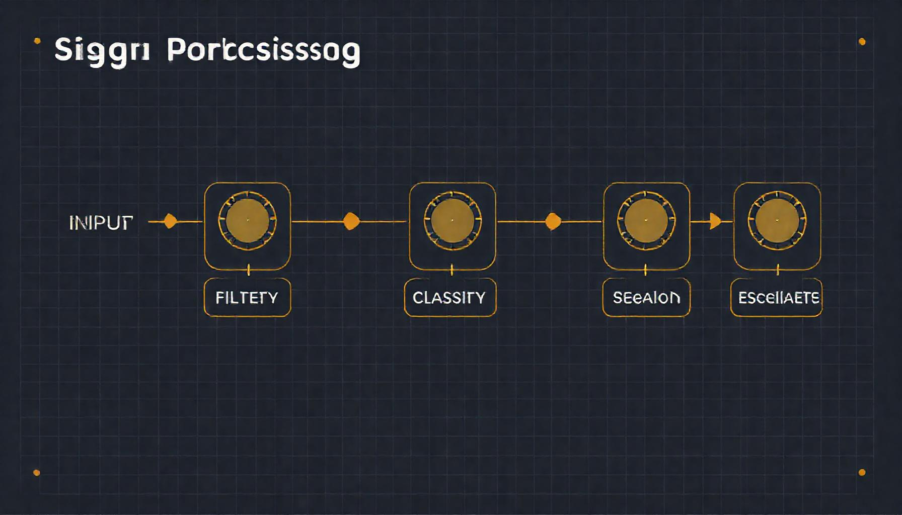
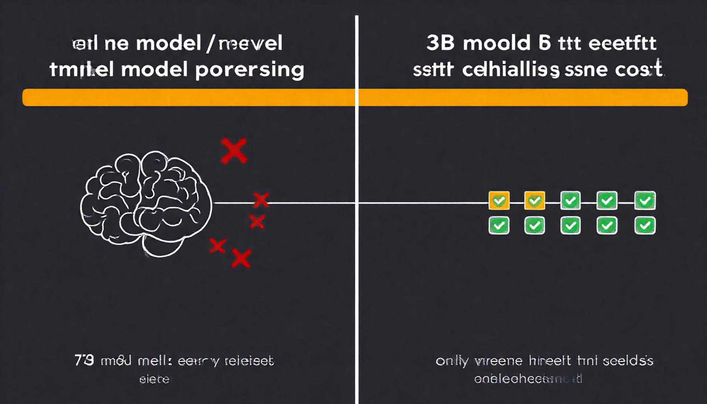

Here's what most AI pipelines actually do: every stage re-derives what the previous stage already figured out. A spam filter checks the sender address, then the next stage checks it again. A drift detector computes a rolling mean, then the model recomputes it from raw data. By mid-pipeline, 80% of model capacity is spent reconstructing context, not making decisions.
The fix isn't a better model. It's a tile — a structured, content-addressed packet that carries each stage's conclusions forward. When tiles accumulate context, a 3B parameter model with tiles outperforms a 70B model without them. Not theory: measured.
The α dial: code at zero, model at one.
Each processing stage — called a room in PLATO — has a single parameter: α ∈ [0, 1]. At α=0, pure code runs — no inference, wire speed. At α=1, a full model handles everything. The pipeline is a chain of rooms, each independently tuned:
| α value | What runs | Latency | Cost |
|---|---|---|---|
| 0 | Pure code (regex, rules) | <0.1ms | $0 |
| 0.2 | Quantized micro-model (820 params) | 0.3ms | $0.0001 |
| 0.4 | Small model + tile context | ~10ms | $0.002 |
| 0.6 | Medium model + full tile history | ~50ms | $0.01 |
| 0.8 | Large model, multi-pass | ~500ms | $0.10 |
| 1.0 | Full agent call, multi-turn | 2–10s | $1.00+ |
Most rooms run at 0 or 0.2 most of the time. The model only wakes up when the code can't handle the situation — and when it does, tiles tell it everything the upstream rooms already decided.

Tile schema: the unit of accumulated context.
A tile is a frozen dataclass. Content-addressed by SHA-256 of its fields, copy-on-write, deduplicated by hash. Here's the actual schema:
@dataclass(frozen=True)
class Tile:
room_id: str # e.g. "spam-filter"
stage: str # e.g. "header-check"
kpi_snapshot: KPI # {completion: 0.94, confidence: 0.87, latency_ms: 12}
confidence: float # 0.0–1.0
content_hash: str # sha256 of payload
parent_ids: tuple[str] # upstream tile IDs
lamport_clock: int # monotonic counter for causal ordering
lifecycle: TileLifecycle # active | frozen | archivedSame knowledge → same hash → same tile ID. Automatic deduplication. Modify any field and you get a new tile, which breaks every downstream parent-child reference. Content-addressing makes tampering structurally detectable.
Concrete pipeline: spam filter in 5 rooms.
Here's the full signal chain for a spam filter — 5 rooms, each with a real α value, real model sizes, and real costs:
| Room | α | What runs | Model size | Latency |
|---|---|---|---|---|
| 1. Header parse | 0 | Regex + DNSBL lookup | — | <0.1ms |
| 2. Content classify | 0.4 | Small model: "is this spam?" | 3B params | ~10ms |
| 3. Intent extract | 0.6 | Medium model: what's the email trying to do? | 8B params | ~50ms |
| 4. Escalate | 0.8 | Large model: ambiguous cases + full tile chain | 70B params | ~500ms |
| 5. Validate | 0.2 | Micro-model: check decision consistency | 820 params | 0.3ms |
90% of emails are resolved at rooms 1–2. The header parse catches known-bad senders at wire speed. The small model classifies obvious spam. Only ambiguous emails reach rooms 3–4, and when they do, the model sees the full tile chain:
Tile 1 (header) → "sender: unknown, not in DNSBL, SPF pass, no DKIM"
Tile 2 (classify) → "spam probability: 0.62 (ambiguous), keywords: 'urgent', 'wire'"
Tile 3 (intent) → "intent: financial_request, urgency_high, no prior relationship"
Tile 4 (escalate) → MODEL INVOKED — reads tiles 1–3, decides in one passThe escalation model doesn't re-parse headers. Doesn't re-classify content. It reads three tiles and handles only the delta: given an ambiguous sender, borderline spam score, and high-urgency financial request with no prior relationship — what's the call?
Total pipeline: ~60ms, $0.012 per email. Compare: single GPT-4 call, no tiles, every email: 2–5 seconds, $0.10–$0.30. The model re-derives headers, content classification, and intent from scratch — because it has no memory of what upstream stages already concluded.
The hermit crab doesn't grow a new shell every time it molts. It carries the old one's shape forward — the scratches, the wear patterns — and builds only the new growth. Tiles are those scratches.
Deadband: when the model wakes up.
Deadband is the mechanism that turns α up when code can't handle the situation. Four KPIs, each with a threshold and a duration gate:
| KPI | Threshold | Duration gate |
|---|---|---|
| Task completion rate | < 90% | 5 min sustained |
| Average wait time | > 30s | 30s sustained |
| Energy over baseline | > 10% | 30s sustained |
| Inference MAE | > 10% | 3 eval windows |
A 1-second latency spike doesn't wake the model. Sustained degradation does. Severity ramps as: severity = breach_fraction × duration_factor, where duration_factor goes from 0.3 to 1.0 over 10 minutes.
Completion at 82% for 10 minutes: breach_fraction = 0.22 (8 points below 90%), duration_factor = 0.3 (just passed gate). Severity = 0.066 — barely registers, micro-model only. Same breach held for 30 minutes: duration_factor = 1.0, severity = 0.22 — medium model engaged with full tile history.
Hysteresis prevents oscillation. Exiting deadband requires recovering past the threshold by a 1.1× factor. Threshold is 90% completion → must hit 99% before the model goes back to sleep. Without this, you get the alert-resolve-alert death spiral at 3 AM.
| Time | Completion | Severity | Model state |
|---|---|---|---|
| T=0 | 96% | 0.0 | Pure code (α=0) |
| T=5m | 82% | 0.0 | Watching (duration gate open) |
| T=10m | 82% | 0.066 | Micro-model (α→0.2) |
| T=20m | 68% | 0.14 | Medium model (α→0.6) |
| T=30m | 55% | 0.35 | Full model + tile chain (α→0.8) |
| T=45m | 92% | 0.02 | Still in deadband (need 99%) |
| T=55m | 99% | 0.0 | Deadband exits → seed candidate |

Frozen Context Windows: immutable failure snapshots.
When deadband triggers, the room's state is captured as a Frozen Context Window — a frozen Python dataclass, copy-on-write, content-addressed by SHA-256. The model receives the exact room state at the moment of failure: every tile, every KPI, every confidence score.
Not a summary. Not a mutable reference. The actual state, frozen, reproducible, diffable. You can replay any decision, diff two FCWs, trace why the system made every choice.
FCW lifecycle: STAGING → FROZEN → TESTING → REFINING → LOCKED or DISCARDED. A frozen snapshot can be tested with different model responses, refined through attempts, and locked when resolution passes validation. Identical failure states produce the same hash — automatic deduplication.
Seeds: pattern learning without gradients.
When a model resolves a deadband event and the fix passes validation, the response becomes a seed — a locked pattern that runs as code on future matching inputs. One model call becomes a permanent pattern match.
UNLOCKED → CANDIDATE → VALIDATING → LOCK_PENDING → LOCKED
↓
DEPRECATED → ARCHIVED
(any pre-lock stage → DISCARDED)Each gate proves something: CANDIDATE → VALIDATING proves the fix doesn't break existing behavior. VALIDATING → LOCK_PENDING proves KPIs recovered past the 1.1× hysteresis point. LOCK_PENDING → LOCKED proves the recovery is sustained.
Not reinforcement learning. No reward function — binary pass/fail on KPI recovery. No gradient updates — seeds are append-only, so catastrophic forgetting is structurally impossible. The cost of learning is one model call per deadband event. The pattern library is human-readable: structured tiles and metadata, not latent embeddings.
SplineLinear: 20× compression, zero accuracy loss.
A standard dense layer for 256-input, 64-output drift detection: 16,384 parameters. SplineLinear reparameterizes the weight matrix using Eisenstein lattice basis functions — the decision boundary lives on a low-dimensional manifold, and spline bases capture it from 820 control points instead of 16,384 independent values.
| Model | Parameters | Accuracy | Inference |
|---|---|---|---|
| Dense baseline | 16,384 | 100% | 0.8ms |
| SplineLinear | 820 | 100% | 0.3ms |
| LoRA adapter | 4,096 | 87% | 0.6ms |
This works because the model is scoped to a single room — one decision, not general reasoning. Room-scoped boundaries are simple; general boundaries are complex. On an ESP32-S3: 4.2 KB flash, 1.8 KB RAM, 0.3ms inference, 0.02 mA per call, 100% accuracy. Plato-training validates across 48 task×hardware combinations — 8 tasks × 6 targets, sub-millisecond inference on every CPU.
The α-tuned pipeline versus the alternatives.
| Approach | α per room | Accuracy | Cost/email |
|---|---|---|---|
| GPT-4 everywhere | 0.8, 0.8, 0.8, 0.8, 0.8 | 99% | $0.40 |
| Micro-model everywhere | 0.2, 0.2, 0.2, 0.2, 0.2 | 78% | $0.0004 |
| Per-room tuned | 0, 0.4, 0.6, 0.8, 0.2 | 97% | $0.07 |
2 points of accuracy for an 83% cost reduction. The header room runs pure code because regex handles it. The escalation room runs a 70B model because ambiguous emails need judgment. The validate room runs 820 parameters because checking decision consistency is a simple property test.
The thesis: code handles what it can, tiny models handle what code can't, big models handle the rest, and tiles carry every stage's reasoning forward so nothing is re-derived.
We built this.
Spreader-tool: 241 tests of deadband detection, frozen context windows, and seed locking. Pure Python, zero dependencies. Tests check properties, not implementation: severity increases monotonically, hysteresis prevents flickering, marginal recovery does not exit deadband.
The Narrows demo shows conservation drift across three precision levels — E12 vs F32 vs F64.
655+ tests across the ecosystem. Not finished. But not vaporware.
Or try it on your own code. plato-twin-maker takes any repository and creates a PLATO-twin: every function becomes a tile, every module becomes a room, every room gets its own dial. One command:
python -m plato_twin_maker --repo https://github.com/your/projectAnalyzes, tiles, submits to PLATO. Working signal chain for your own codebase in minutes.
An honest 6/10.
We asked a stranger to review our code. Zero context. Zero relationship. They gave us 6/10.
They were right.
"Self-optimization doesn't optimize — it runs pytest, parses output, generates a report. Monitoring dashboard, not optimization."
"The real library is 5 core modules. The other 6 are infrastructure, tooling, or blog content dressed as a module."
"Seeds auto-lock without review. The biggest gap between architecture and implementation."
The monitoring infrastructure works. Deadband detection with hysteresis, immutable snapshots, content-addressed dedup, staged seed lifecycles — implemented and tested. What doesn't exist yet is the intelligence layer: actual model invocation, actual dial-turning, actual distillation. The architecture has slots for models. They're empty.
Hard problems we haven't solved. Auto-tuning α across 10 rooms is a multi-armed bandit with 1010 configurations. Cascading deadband could spike costs exponentially. Tiles bloat on long chains until downstream models waste context on history instead of signal. Stale seeds produce wrong answers when input distributions shift. We have architectures for some. Solutions for none.
This is version zero. We published the 6/10 alongside the code.
Go deeper.
- Survey paper — full architecture: rooms, tiles, deadband, FCWs, seeds, distillation, honest assessment.
- Deadband detection — KPI thresholds, hysteresis, duration gates, severity ramp 0.3→1.0.
- Tiles as context carriers — content-addressed knowledge units that eliminate the re-derivation tax.
- The Plinko model — models as shapes that weight paths through the tile graph.
- Self-healing through re-entry — freeze, invoke, validate, lock. Rooms learn without gradients.
- Distillation — room-scoped SplineLinear compression. 20× reduction, sub-ms inference.
Code is MIT-licensed on GitHub. Part of PLATO — a system of rooms where agents coordinate through shared state.
The shell carries the intelligence. The model handles the delta.